48份保留人工；25份支持自动；9份未定；1份改为全部。联系表标题显示的是复核前状态；下方文字为最终复核意见。
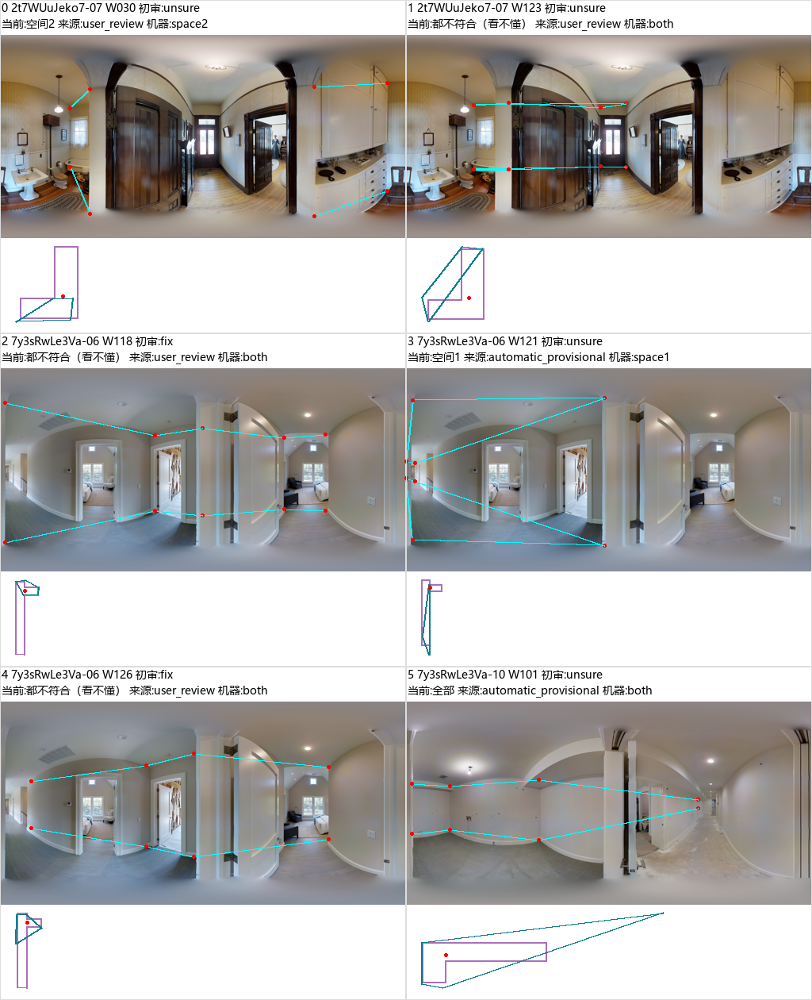
0 · W030 · 空间2：跨接缝的右侧空间可辨，保留空间2。
1 · W123 · 都不符合（看不懂）：门柱/通行局部折返，保留看不懂。
2 · W118 · 都不符合（看不懂）：保留人工裁决；程序面积初判不能覆盖人工对局部点、折返与范围的判断。
3 · W121 · 空间1：单侧通道可辨，狭长几何不等于范围不明。
4 · W126 · 都不符合（看不懂）：保留人工裁决；程序面积初判不能覆盖人工对局部点、折返与范围的判断。
5 · W101 · 未定：左室多点，右侧仅远处一对，不能定全部。
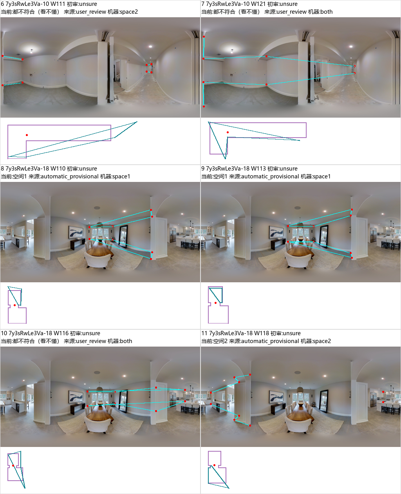
6 · W111 · 都不符合（看不懂）：保留人工裁决；程序面积初判不能覆盖人工对局部点、折返与范围的判断。
7 · W121 · 都不符合（看不懂）：保留人工裁决；程序面积初判不能覆盖人工对局部点、折返与范围的判断。
8 · W110 · 空间1：起居侧多处点位可辨。
9 · W113 · 空间1：起居主体与门柱附近构成同侧意图。
10 · W116 · 都不符合（看不懂）：保留人工裁决；程序面积初判不能覆盖人工对局部点、折返与范围的判断。
11 · W118 · 空间2：跨接缝的通行区域可辨。
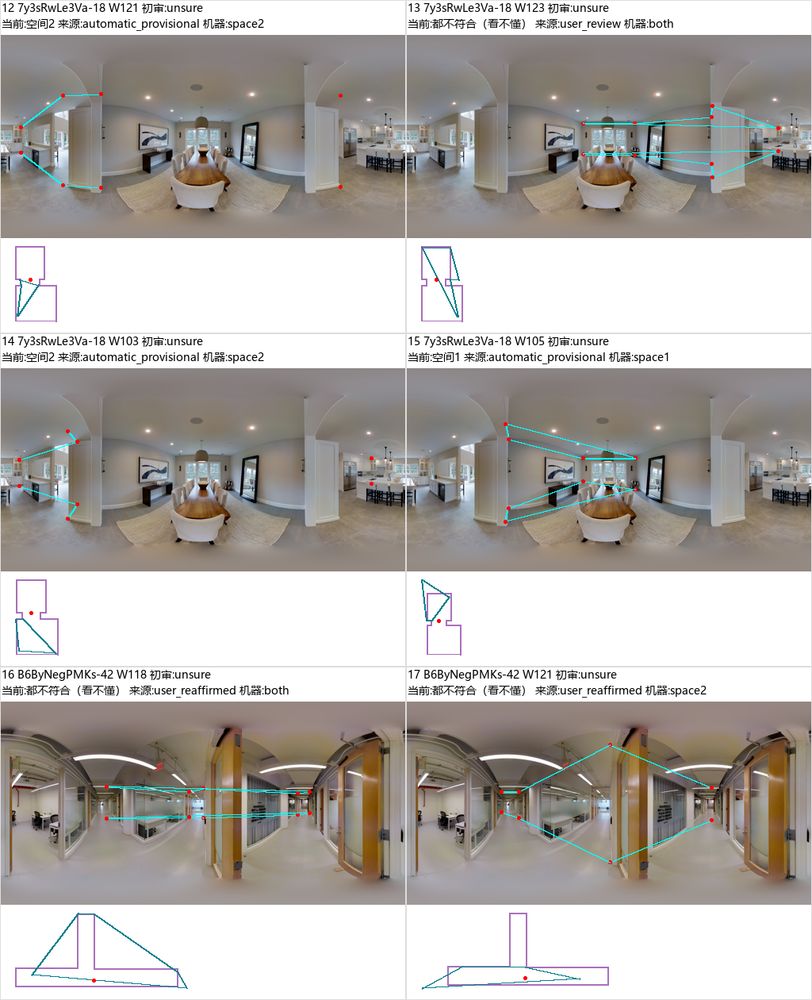
12 · W121 · 未定：主体单侧，另一侧孤立点，单侧与混接不明。
13 · W123 · 都不符合（看不懂）：保留人工裁决；程序面积初判不能覆盖人工对局部点、折返与范围的判断。
14 · W103 · 空间2：原图点位覆盖与当前空间意图相容；初审无法判断不直接作为排除，几何质量另评。
15 · W105 · 未定：斜三角跨门口与房间，空间2意图不充分。
16 · W118 · 都不符合（看不懂）：保留人工裁决；程序面积初判不能覆盖人工对局部点、折返与范围的判断。
17 · W121 · 都不符合（看不懂）：保留人工裁决；程序面积初判不能覆盖人工对局部点、折返与范围的判断。
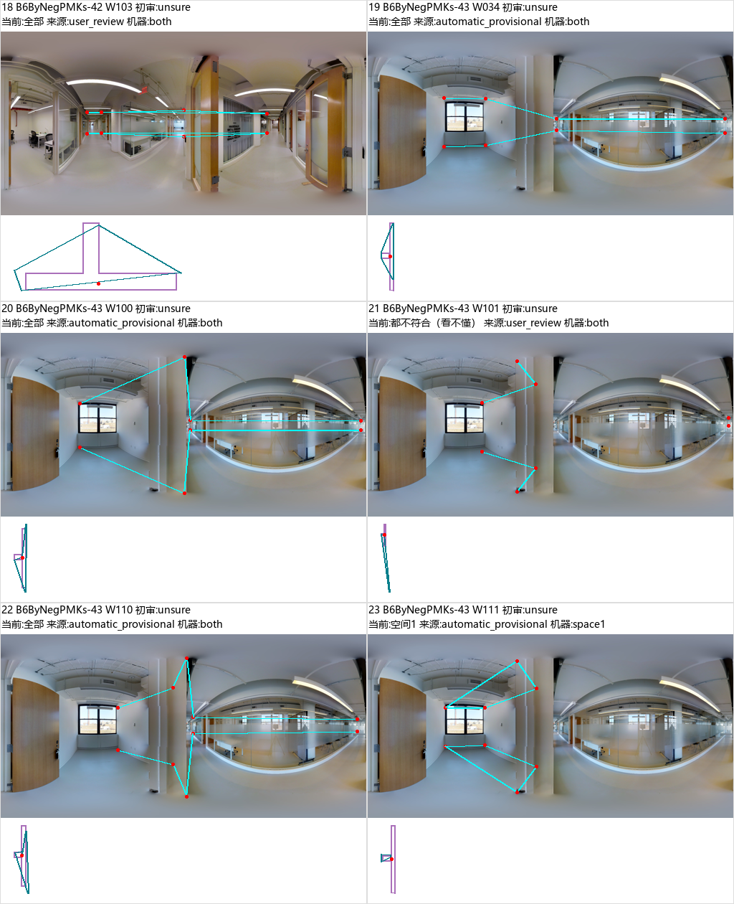
18 · W103 · 全部：用户已确认新边界下全部，保留。
19 · W034 · 全部：原图点位覆盖与当前空间意图相容；初审无法判断不直接作为排除，几何质量另评。
20 · W100 · 全部：原图点位覆盖与当前空间意图相容；初审无法判断不直接作为排除，几何质量另评。
21 · W101 · 都不符合（看不懂）：保留人工裁决；程序面积初判不能覆盖人工对局部点、折返与范围的判断。
22 · W110 · 全部：原图点位覆盖与当前空间意图相容；初审无法判断不直接作为排除，几何质量另评。
23 · W111 · 空间1：原图点位覆盖与当前空间意图相容；初审无法判断不直接作为排除，几何质量另评。
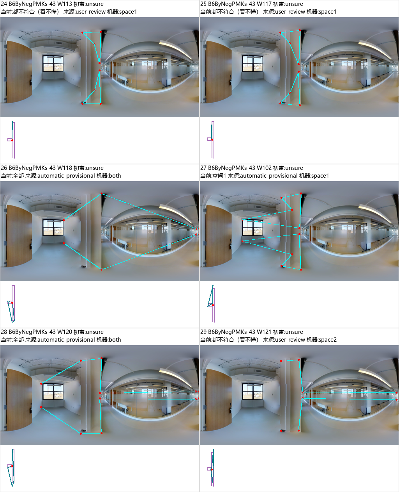
24 · W113 · 都不符合（看不懂）：只圈门柱窄带，不是完整空间1。
25 · W117 · 都不符合（看不懂）：中央墙柱窄带，保留看不懂。
26 · W118 · 未定：右侧少量远点，全部与单侧加孤点难分。
27 · W102 · 空间1：原图点位覆盖与当前空间意图相容；初审无法判断不直接作为排除，几何质量另评。
28 · W120 · 未定：左室/门柱多点，右侧证据不足，全部不稳。
29 · W121 · 都不符合（看不懂）：柱边/通道端点，完整空间2意图不足。
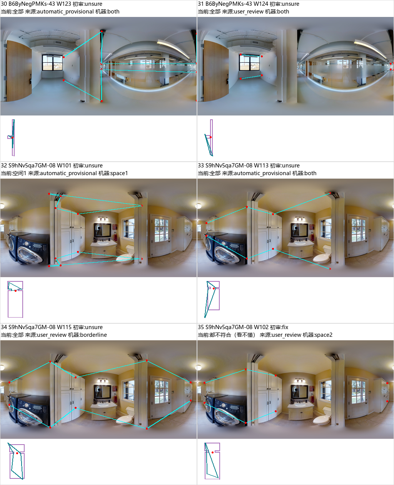
30 · W123 · 未定：左室门柱清楚，右侧少量远点不足以定全部。
31 · W124 · 全部：两侧各为局部窄点组，全部解释仍有歧义，保留用户主标签。
32 · W101 · 空间1：浴室侧范围可辨，角点误差单列。
33 · W113 · 全部：原图点位覆盖与当前空间意图相容；初审无法判断不直接作为排除，几何质量另评。
34 · W115 · 全部：两侧均有多点，人工全部优先于机器borderline。
35 · W102 · 都不符合（看不懂）：保留人工裁决；程序面积初判不能覆盖人工对局部点、折返与范围的判断。
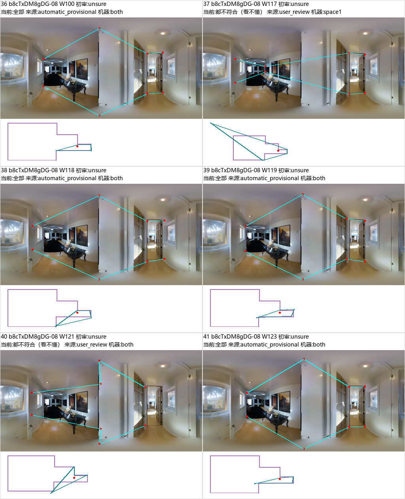
36 · W100 · 全部：原图点位覆盖与当前空间意图相容；初审无法判断不直接作为排除，几何质量另评。
37 · W117 · 都不符合（看不懂）：保留人工裁决；程序面积初判不能覆盖人工对局部点、折返与范围的判断。
38 · W118 · 全部：原图点位覆盖与当前空间意图相容；初审无法判断不直接作为排除，几何质量另评。
39 · W119 · 全部：原图点位覆盖与当前空间意图相容；初审无法判断不直接作为排除，几何质量另评。
40 · W121 · 都不符合（看不懂）：保留人工裁决；程序面积初判不能覆盖人工对局部点、折返与范围的判断。
41 · W123 · 全部：原图点位覆盖与当前空间意图相容；初审无法判断不直接作为排除，几何质量另评。
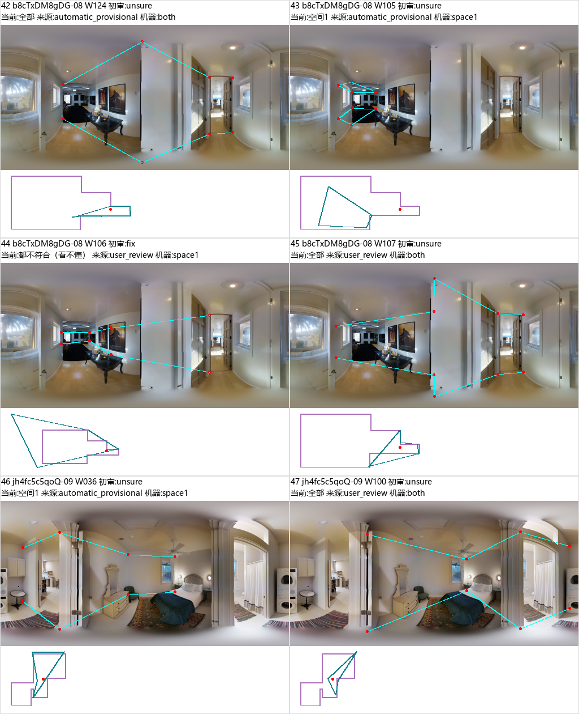
42 · W124 · 全部：原图点位覆盖与当前空间意图相容；初审无法判断不直接作为排除，几何质量另评。
43 · W105 · 空间1：单侧起居区域多点可辨。
44 · W106 · 都不符合（看不懂）：保留人工裁决；程序面积初判不能覆盖人工对局部点、折返与范围的判断。
45 · W107 · 全部：保留人工裁决；程序面积初判不能覆盖人工对局部点、折返与范围的判断。
46 · W036 · 空间1：原图点位覆盖与当前空间意图相容；初审无法判断不直接作为排除，几何质量另评。
47 · W100 · 全部：保留人工裁决；程序面积初判不能覆盖人工对局部点、折返与范围的判断。
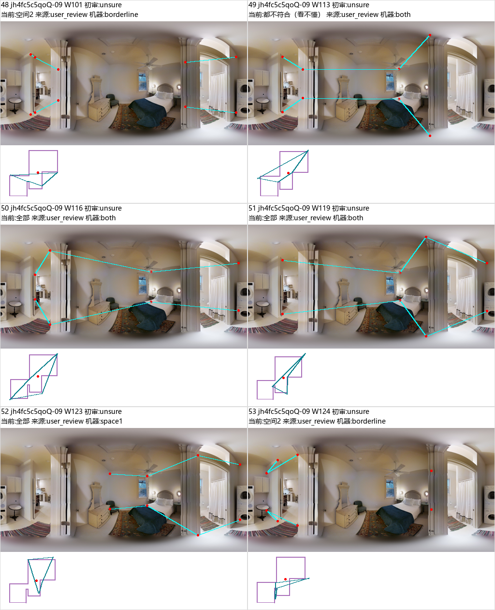
48 · W101 · 空间2：跨全景接缝区域连贯，保留空间2，不按左右机械分空间。
49 · W113 · 都不符合（看不懂）：保留人工裁决；程序面积初判不能覆盖人工对局部点、折返与范围的判断。
50 · W116 · 全部：保留人工裁决；程序面积初判不能覆盖人工对局部点、折返与范围的判断。
51 · W119 · 全部：保留人工裁决；程序面积初判不能覆盖人工对局部点、折返与范围的判断。
52 · W123 · 全部：视觉偏卧室侧，用户全部与机器空间1仍有差异；人工主标签保留，单列争议。
53 · W124 · 空间2：跨接缝浴室侧为主体，孤立点不扩展为全部。
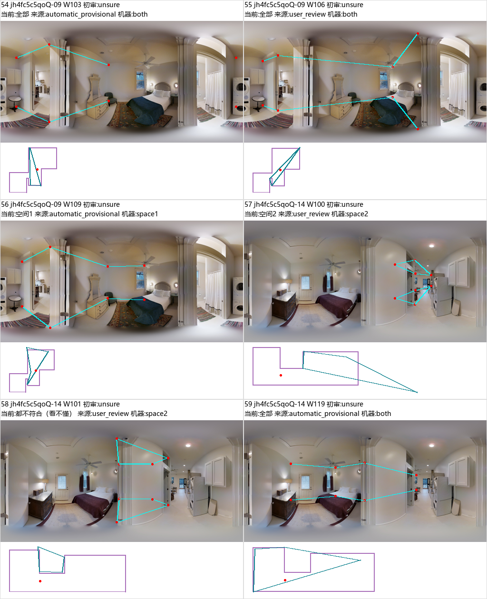
54 · W103 · 未定：左侧局部多点、卧室少量点，斜向闭环不能证明全部。
55 · W106 · 全部：保留人工裁决；程序面积初判不能覆盖人工对局部点、折返与范围的判断。
56 · W109 · 空间1：原图点位覆盖与当前空间意图相容；初审无法判断不直接作为排除，几何质量另评。
57 · W100 · 空间2：右侧纵深可辨，保留空间2。
58 · W101 · 都不符合（看不懂）：中央墙柱凹口，保留看不懂。
59 · W119 · 未定：卧室主体清楚，右侧仅近门口一对，全部不稳。
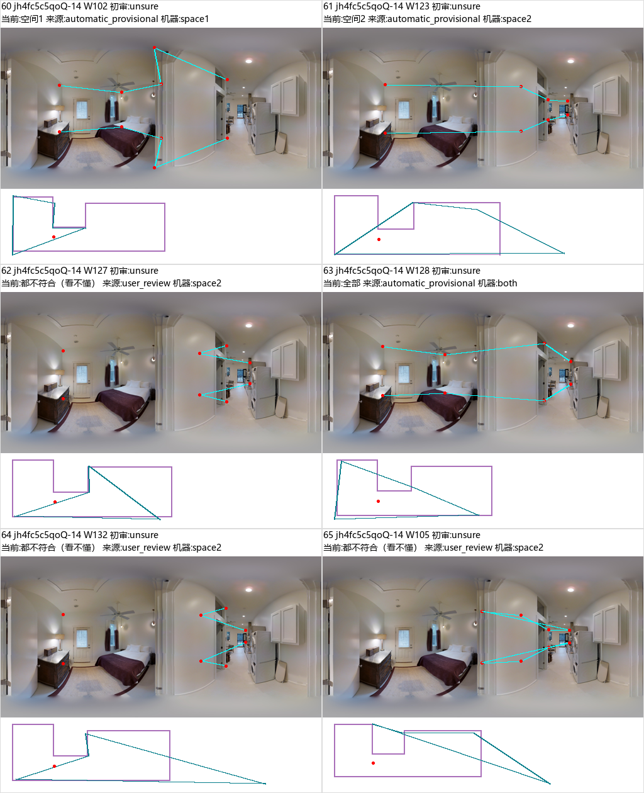
60 · W102 · 空间1：卧室侧及门口边界可辨。
61 · W123 · 全部：卧室与右侧纵深均有多个不同位置的点对；机器按面积判空间2不稳，改为全部。
62 · W127 · 都不符合（看不懂）：卧室孤立一对点，接受用户看不懂。
63 · W128 · 全部：原图点位覆盖与当前空间意图相容；初审无法判断不直接作为排除，几何质量另评。
64 · W132 · 都不符合（看不懂）：卧室孤立点与右侧点组混合，保留看不懂。
65 · W105 · 都不符合（看不懂）：右侧意图较强；保留用户看不懂，代理空间2意见单列。
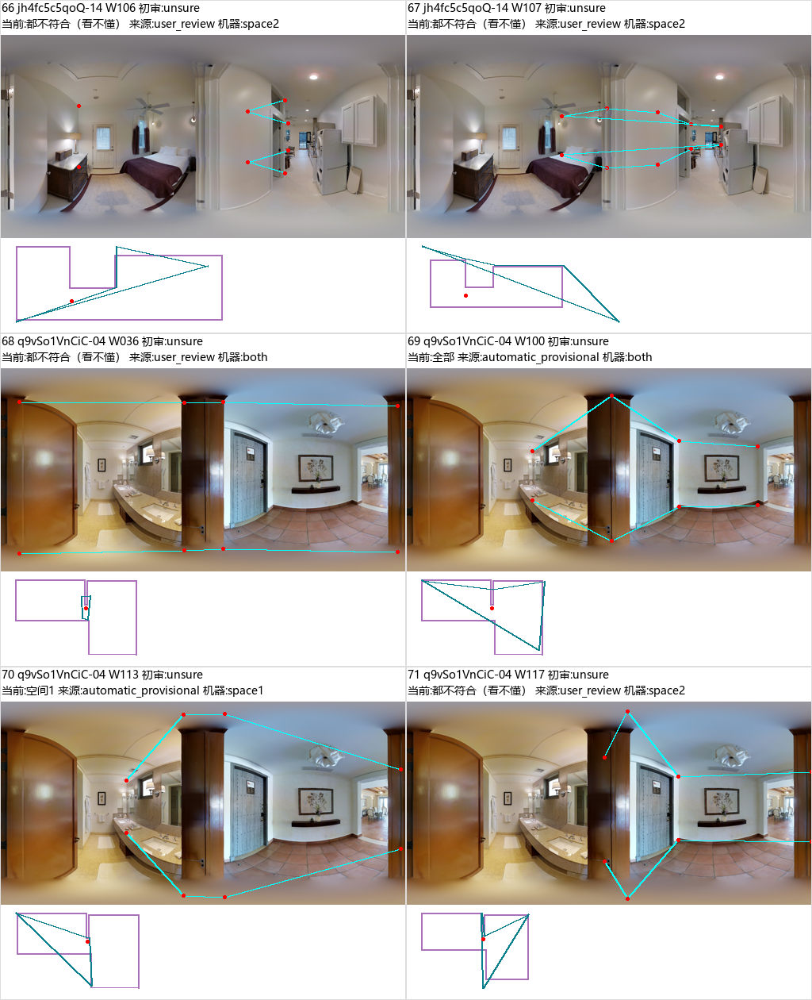
66 · W106 · 都不符合（看不懂）：卧室孤立点混入右侧局部，保留看不懂。
67 · W107 · 都不符合（看不懂）：可解释为跨两空间但范围缩小；保留看不懂，代理全部意见单列。
68 · W036 · 都不符合（看不懂）：门柱近墙点位、底面塌缩，保留看不懂。
69 · W100 · 全部：原图点位覆盖与当前空间意图相容；初审无法判断不直接作为排除，几何质量另评。
70 · W113 · 未定：主要围绕门柱/右室，空间1面积占优不等于语义归属。
71 · W117 · 都不符合（看不懂）：保留人工裁决；程序面积初判不能覆盖人工对局部点、折返与范围的判断。
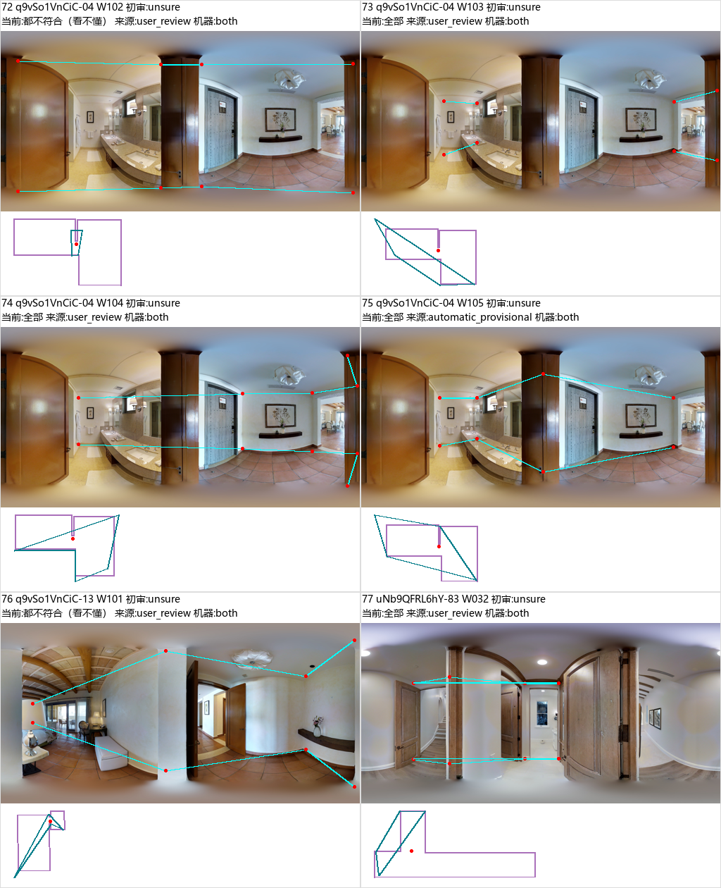
72 · W102 · 都不符合（看不懂）：近墙点与塌缩底面，保留看不懂。
73 · W103 · 全部：保留人工裁决；程序面积初判不能覆盖人工对局部点、折返与范围的判断。
74 · W104 · 全部：保留人工裁决；程序面积初判不能覆盖人工对局部点、折返与范围的判断。
75 · W105 · 全部：原图点位覆盖与当前空间意图相容；初审无法判断不直接作为排除，几何质量另评。
76 · W101 · 都不符合（看不懂）：两侧有多点但底面折返；代理全部解释单列，不覆盖用户看不懂。
77 · W032 · 全部：保留人工裁决；程序面积初判不能覆盖人工对局部点、折返与范围的判断。
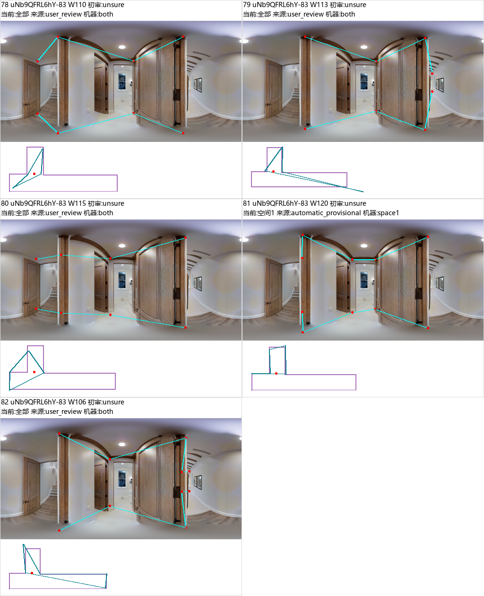
78 · W110 · 全部：中央空间为主，全部和单侧解释并存。
79 · W113 · 全部：中央多点加右边窄点组，全部可能受孤点影响。
80 · W115 · 全部：中央与门口多点，全部与单侧不唯一。
81 · W120 · 空间1：中央窄空间轮廓明确，支持空间1。
82 · W106 · 全部：中央与右侧局部点组混合，全部解释不唯一。